|
Pinkpop 2005 |
Pinkpop
2005
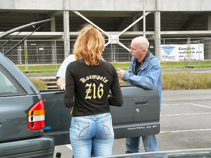
Zoals gebruikelijk, verzamelen bij het Parkstad Limburg Stadion.
Olav Krings is de eerste Roda-fan die we binnen zien strompelen.
Slecht
geslapen kerel?
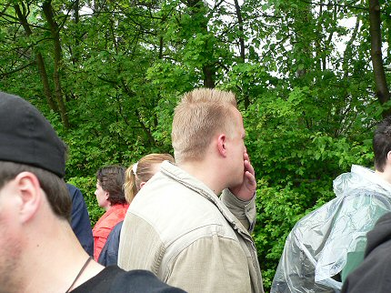
De volgende Rodarakker die liever niet herkenbaar in beeld wil
;-)
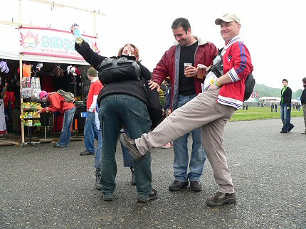
Popeye Theo en net-niet-Rodagirl Veertje zijn al vroeg in de
olie.
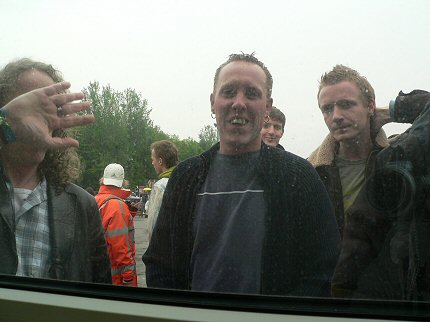
Een vaste Roda-klant aan de kassa.
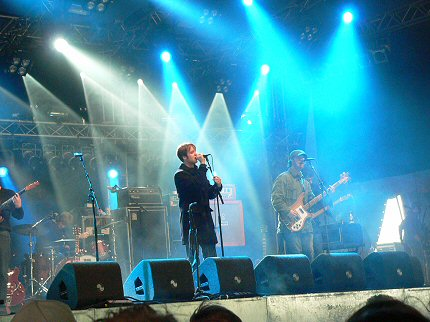
De braafste jongetjes van de klas noemen zich The Coral. Suffe
muziek
met dito reactie van het publiek.
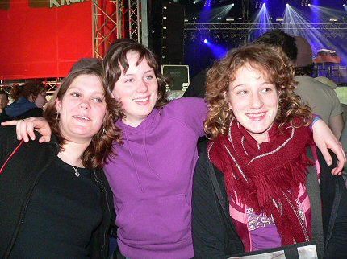
Coral-groupies. Mail
koempel@koempel.nl voor de foto in grootformaat.
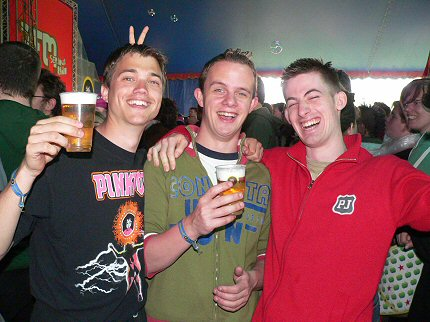
Dat geldt ook voor jullie.
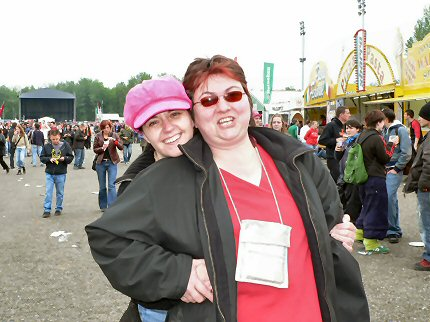
Jacqueline van de Kujovic- en SV Roda site als vanouds present op
PP.
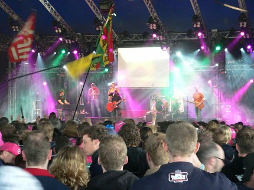
100% feest in de 3FM-tent met Rowwen Hèze.
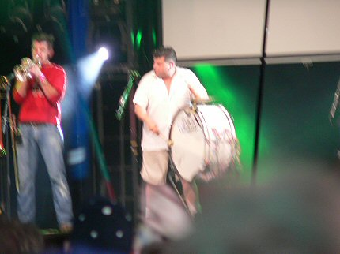
De jarige drummer mocht de grote trom geselen op "De
Klompendans"
Waarna een speciale versie van "Bestel mar" volgde.
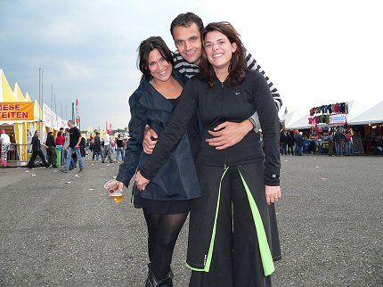
Lucky bastard met twee black beauties. Mail
koempel@koempel.nl voor de
foto in grootformaat.
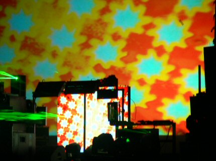
The Chemical Brothers verzorgden een spectaculaire afsluiter van
PP day one.
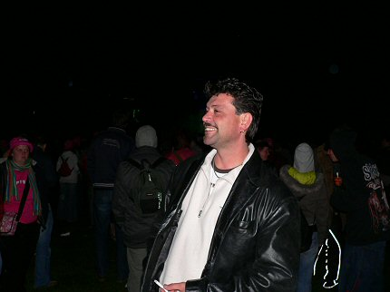
Rodafanatic Jos gaat uit zijn dak!
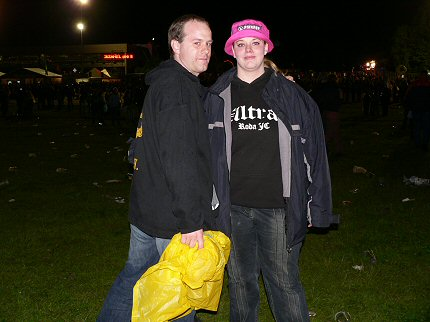
Wanneer de Brothers hun lange concert afgerond hebben verschijnen
plots
twee Roda-Ultra's: Bjorn en Isanne.
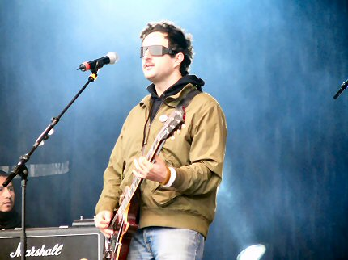
De Mexicanen van Molotov snappen niet dat ze in Nederland een
festival in
de winter geven.... Wij snappen niet waarom de band zoveel cover speelt.
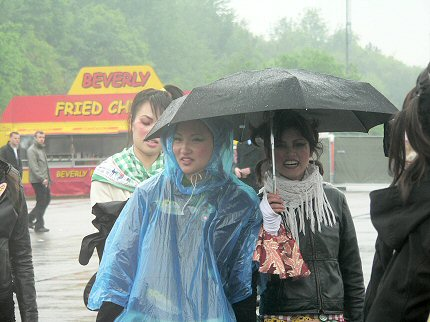
Een leger China-girls maakte promotie voor Heineken.
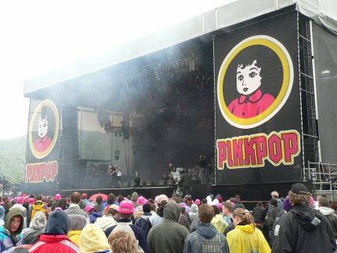
Hardste en snelste band: Sick of it all. Beroerde takke-herrie.
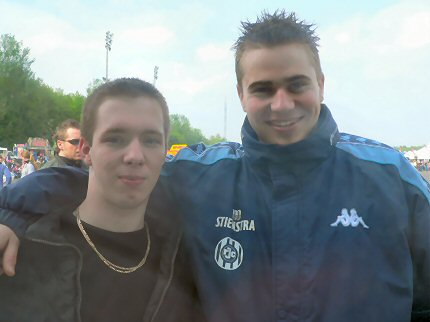
Weer een Rodasupporter gelokaliseerd: Kevin H. uit K. (rechts).
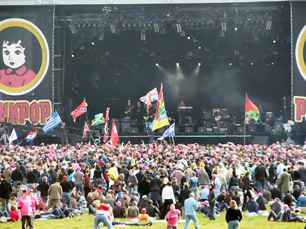
Beef, luie reggae uit eigen land dus wat doe doe je dan.....
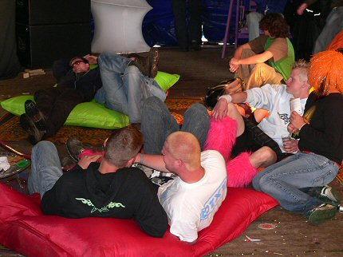
.... lekker loungen....
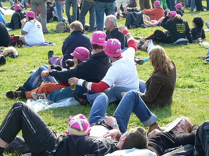
... of de zit-polonaise doen.
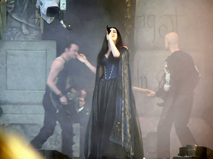
De wonderschone Sharon den Adel van Within Temptation was goed
voor
drie jurken en een dijk van een stem in een weinig verrassend maar prima
optreden met de nodige gothic-ingrediënten.
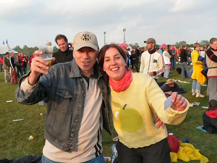
Alweer twee Roda-fans gelokaliseerd.
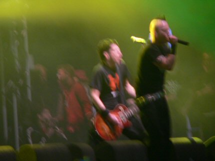
Lang geleden begon deze band op Rockin' Colonia om op Pinkpop
2005...
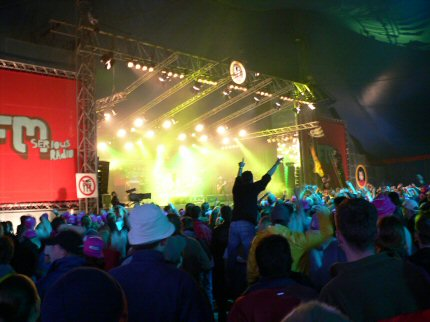
... de 3FM-tent plat te spelen! Natuurlijk; de Heideroosjes !
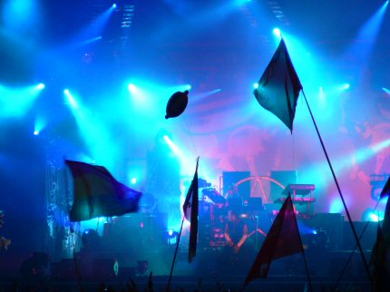
The Prodigy sloot de tweede Pinkpopdag af met een energieke show.
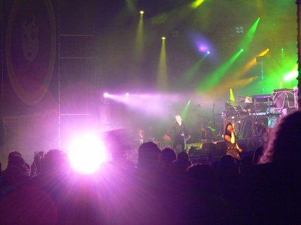
Alle bekende nummers kwamen voorbij.
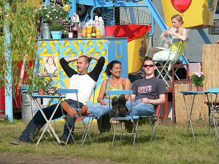
De derde dag was vooral zonnig. Hier een relaxed begin.
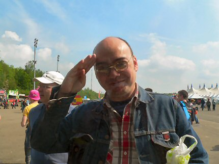
Pop-goeroe Indo-Eddy, altijd tot uw dienst als wandelende
pop-encyclopedie.
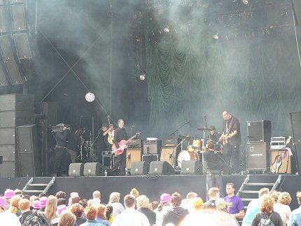
Triggerfinger wijdt de John Peel stage in.
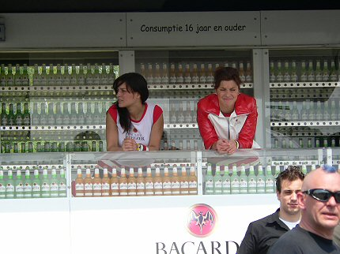
De bR33zAh-babes.
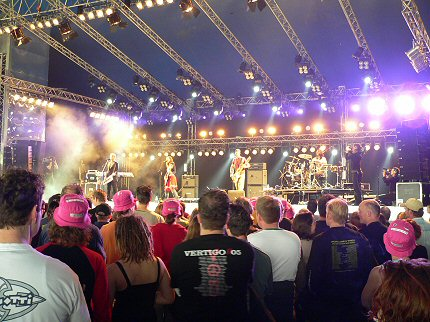
Een alleraardigste act van Wir sind Helden. Kruising tussen Nena
en Ina
Deter. Leuke zangeres. De toetsenist was trots dat hij enkele woordjes
Nederlands beheerste: "Ik hou van jou".
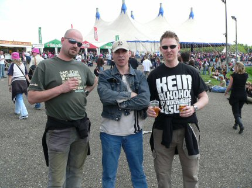
Weer twee Rodafans getraceerd: links Ray en rechts Tolk.
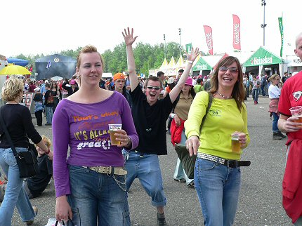
Hoera weer twee Rodafans. Deze Rodameëdsjes komen uit Bochus.
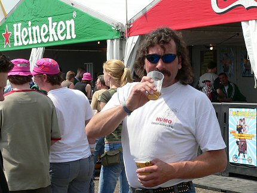
En ook deze trouwe Pinkpopganger is Roda-supporter.
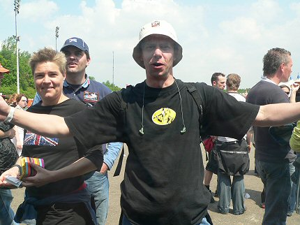
Nog meer pride of the south. Dit is D'r Pas. Prachtig shirt
kerel!
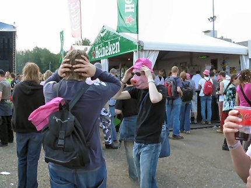
Koffieboer probeert zich te verbergen met een hoedje en een
zonnebril maar
we herkennen hem meteen.
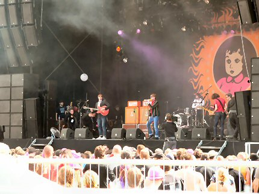
Dit zijn de Kaiser Chiefs. Een beetje zonderlinge Britten met
moeilijk in een
hokje te plaatsen muziek. Na 40 minuten zaten ze al door hun repertoire
heen.
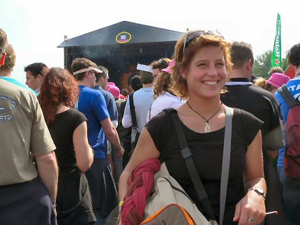
Dit meisje is in elk geval een fan van de Chiefs. Niet vergeten
te mailen
meid, je foto's liggen klaar voor verzending!
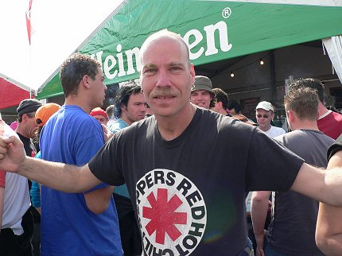
Alweer een Rodafan. Het is Maurice van de SBC.
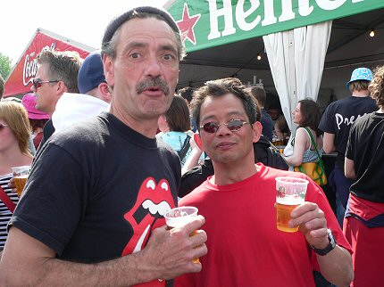
Nog twee Rodafans. De linker is/was steward en weet te melden dat
a.s.
woensdag of donderdag bekend wordt gemaakt dat Huub Stevens de
nieuwe trainer van RJC wordt.
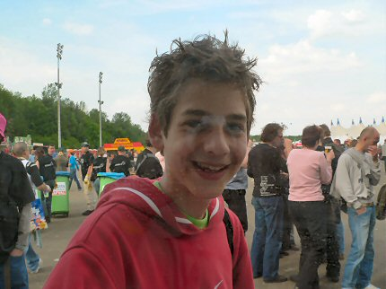
Deze Rodarakker weet niet wie Regillio Vrede is. Tot zondag Brian!
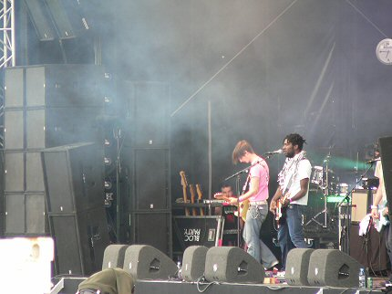
Block Party. Ook deze band speelde niet het volle uur uit.
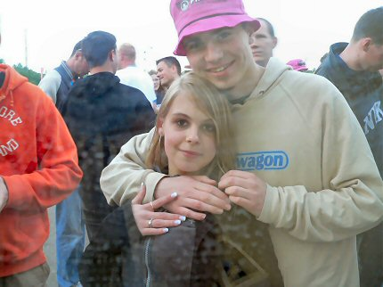
Kevin met zijn nieuwe Roda-girl.

Oud-Broekies. Zie je wel: goed leren dan komt alles goed!
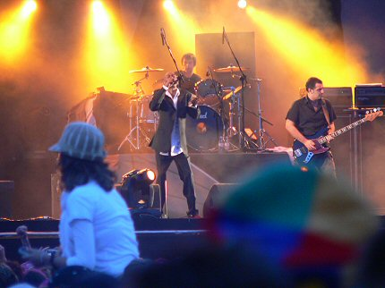
De afsluiter van Pinkpop 2005: Faithless. Thanks, love, respect.
Maar nu is
het goed geweest met jullie. Danke-Bitte.
Pinkpop 2005 mag bijgeschreven worden als een collector's
item. Weinig
toeschouwers maar mede daardoor van een ongekend knusse sfeer. Het
programma was niet werelds, maar voor de selectieve toeschouwer viel er
veel te genieten. De eerste twee dagen waren koud en af en toe behoorlijk
nat. Pas in de late namiddag van dag twee brak de zon door. Dag drie was
ronduit zonnig. Pinkpop mag NOOIT verdwijnen !!